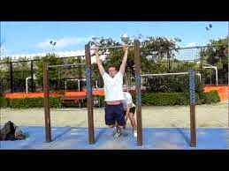

3 formas de hacer más dominadas - wikiHow
 MENSAJES ENTRARIniciar sesión
El inicio de sesión por medio de las redes sociales no funciona en modo incógnito. Inicia sesión en el sitio con tu nombre de usuario o correo electrónico para continuar. Facebook Google Cuenta de wikiHow ¿No tienes una cuenta? Crear cuenta EXPLORA Acerca de nosotros Portal de la comunidad Página al azar Categorías CONTRIBUYE Más ideas Inicio Al azar Buscar categorías Acerca de wikiHow Inicia sesión/Regístrate Políticas Al usar nuestro sitio, aceptas nuestra política de cookies . Configuración de cookies Aceptar ✖ Categorías Deportes Adecuación físicaCómo hacer más dominadas
Descargar el PDF Coescrito por Julian Arana, M.S.eD., NCSF-CPTReferencias
Descargar el PDF X Este artículo fue coescrito por Julian Arana, M.S.eD., NCSF-CPT . Julian Arana es un entrenador personal y fundador de B-Fit Training Studios, un conjunto de estudios de entrenamiento personal y bienestar con sede en Miami, Florida. Julian tiene más de 12 años de experiencia en entrenamiento personal y coaching. Es un entrenador personal certificado por el Consejo Nacional de Fuerza y Aptitud Física (NCSF, por sus siglas en inglés). Tiene una licenciatura en Fisiología del Ejercicio de la Universidad Internacional de Florida y una maestría en Fisiología del Ejercicio especializada en fuerza y acondicionamiento de la Universidad de Miami.
En este artículo, hay 12 referencias citadas, que se pueden ver en la parte inferior de la página.
Este artículo ha sido visto 14 460 veces.
Las dominadas son quizás el mejor ejercicio para mejorar la fuerza de la parte superior del cuerpo, pero pueden ser increíblemente difíciles de hacer al principio. Afortunadamente, con un poco de trabajo arduo y dedicación, podrás mejorar tu rendimiento y aumentar el número de dominadas que puedes hacer, incluso si por el momento no puedes completar una.
Pasos
Método 1 de 3: Mejorar tu forma
{"smallUrl":"https:\/\/www.wikihow.com\/images_en\/thumb\/f\/f9\/Do-More-Pull-Ups-Step-1-Version-3.jpg\/v4-460px-Do-More-Pull-Ups-Step-1-Version-3.jpg","bigUrl":"https:\/\/www.wikihow.com\/images\/thumb\/f\/f9\/Do-More-Pull-Ups-Step-1-Version-3.jpg\/v4-728px-Do-More-Pull-Ups-Step-1-Version-3.jpg","smallWidth":460,"smallHeight":345,"bigWidth":728,"bigHeight":546,"licensing":" div class=\"mw-parser-output\" \/div "} 1 Haz un calentamiento de 5 a 10 minutos antes de comenzar. El calentamiento hará que la sangre fluya y te ayudará a prevenir lesiones. Para calentar, realiza algunos ejercicios cardiovasculares como caminar o trotar. Trata de hacer algunos estiramientos activos, como girar o balancear los brazos. {"smallUrl":"https:\/\/www.wikihow.com\/images_en\/thumb\/8\/8a\/Do-More-Pull-Ups-Step-2-Version-3.jpg\/v4-460px-Do-More-Pull-Ups-Step-2-Version-3.jpg","bigUrl":"https:\/\/www.wikihow.com\/images\/thumb\/8\/8a\/Do-More-Pull-Ups-Step-2-Version-3.jpg\/v4-728px-Do-More-Pull-Ups-Step-2-Version-3.jpg","smallWidth":460,"smallHeight":345,"bigWidth":728,"bigHeight":546,"licensing":" div class=\"mw-parser-output\" \/div "} 2 Mantén los hombros en posición y arquea la espalda. Si las dominadas te resultan difíciles, puede ser natural que tiendas a "comprimir" el cuerpo mientras las haces. Esto puede poner más tensión en los músculos del cuello y de la espalda, haciendo que todo el proceso de entrenamiento sea más exigente. Para evitarlo, mantén los hombros hacia atrás y la columna vertebral arqueada. [1] X Fuente de investigación {"smallUrl":"https:\/\/www.wikihow.com\/images_en\/thumb\/4\/4b\/Do-More-Pull-Ups-Step-3-Version-2.jpg\/v4-460px-Do-More-Pull-Ups-Step-3-Version-2.jpg","bigUrl":"https:\/\/www.wikihow.com\/images\/thumb\/4\/4b\/Do-More-Pull-Ups-Step-3-Version-2.jpg\/v4-728px-Do-More-Pull-Ups-Step-3-Version-2.jpg","smallWidth":460,"smallHeight":345,"bigWidth":728,"bigHeight":546,"licensing":" div class=\"mw-parser-output\" \/div "} 3 Usa los músculos de la espalda y no solamente los de los brazos. Para las personas que no han aprendido lo suficiente, las dominadas pueden parecer la prueba ideal de la fuerza del brazo. Sin embargo, los músculos de la espalda son igual de importantes, si no más, en este ejercicio. Para hacer que el ejercicio sea más fácil y efectivo, procura usar los músculos de la espalda y los que rodean las axilas para ayudarte a elevarte. [2] X Fuente de investigación Específicamente, procura ejercitar los músculos Latissimus dorsi (dorsales o "lats") y los deltoides posteriores ("delts"). {"smallUrl":"https:\/\/www.wikihow.com\/images_en\/thumb\/2\/2a\/Do-More-Pull-Ups-Step-4-Version-3.jpg\/v4-460px-Do-More-Pull-Ups-Step-4-Version-3.jpg","bigUrl":"https:\/\/www.wikihow.com\/images\/thumb\/2\/2a\/Do-More-Pull-Ups-Step-4-Version-3.jpg\/v4-728px-Do-More-Pull-Ups-Step-4-Version-3.jpg","smallWidth":460,"smallHeight":345,"bigWidth":728,"bigHeight":546,"licensing":" div class=\"mw-parser-output\" \/div "} 4 Cruza las piernas mientras realizas el ejercicio. Cuando realices las dominadas, cruza las piernas cerca de los tobillos. Aunque pueda parecer poco importante, esto disminuirá la carga en los brazos y te ayudará a mantener la forma adecuada mientras haces el ejercicio. [3] X Fuente de investigación Al cruzar las piernas, puedes doblar las rodillas o mantenerlas rectas. Ninguna de las dos afectará a la rutina general, así que elige la opción que más te guste. {"smallUrl":"https:\/\/www.wikihow.com\/images_en\/thumb\/5\/5c\/Do-More-Pull-Ups-Step-5-Version-3.jpg\/v4-460px-Do-More-Pull-Ups-Step-5-Version-3.jpg","bigUrl":"https:\/\/www.wikihow.com\/images\/thumb\/5\/5c\/Do-More-Pull-Ups-Step-5-Version-3.jpg\/v4-728px-Do-More-Pull-Ups-Step-5-Version-3.jpg","smallWidth":460,"smallHeight":345,"bigWidth":728,"bigHeight":546,"licensing":" div class=\"mw-parser-output\" \/div "} 5 Haz dominadas asistidas si se te hace muy difícil. Las dominadas asistidas te permitirán realizar los mismos movimientos básicos que harías con una normal, pero con un poco más de ayuda para que puedas completarla sin problemas. Ya que estas imitan de cerca a las dominadas auténticas, son fantásticas para mejorar tu forma antes de practicar las de verdad. Puedes hacer dominadas asistidas: [4] X Fuente de investigación utilizando una máquina de dominadas; colocando una banda de resistencia alrededor de la barra y el pie para soportar parte del peso; parándote sobre un banco con un solo pie; pidiéndole a un compañero que te sujete los pies o las piernas mientras haces el ejercicio. AnuncioMétodo 2 de 3: Exigirte a ti mismo
{"smallUrl":"https:\/\/www.wikihow.com\/images_en\/thumb\/1\/15\/Do-More-Pull-Ups-Step-6-Version-3.jpg\/v4-460px-Do-More-Pull-Ups-Step-6-Version-3.jpg","bigUrl":"https:\/\/www.wikihow.com\/images\/thumb\/1\/15\/Do-More-Pull-Ups-Step-6-Version-3.jpg\/v4-728px-Do-More-Pull-Ups-Step-6-Version-3.jpg","smallWidth":460,"smallHeight":345,"bigWidth":728,"bigHeight":546,"licensing":" div class=\"mw-parser-output\" \/div "} 1 Varía el tipo de dominadas que haces. Incluso las dominadas más básicas de arriba hacia abajo tienen diferentes variaciones que puedes alternar a tu gusto. Estos diferentes estilos trabajarán sobre músculos ligeramente diferentes, lo que significa que quizás te sientas mejor en uno que en el otro. Algunos estilos que puedes incluir son: Estilo estándar: toma la barra con un agarre prono (por encima) y mantén las manos separadas a la altura de los hombros. Luego, usa movimientos lentos y constantes para llevar el pecho hacia la barra. Estilo neutro: toma dos barras paralelas que estén entre 30 y 60 cm (1 y 2 pies) de distancia, asegurándote de que las palmas de las manos estén una frente a la otra. Luego, levántate hasta que el pecho quede lo más nivelado posible con las barras. [5] X Fuente de investigación Estilo supino: sujeta la barra con un agarre por debajo (supino) con las manos separadas a la anchura de los hombros. Luego, sube lentamente, apretando los bíceps para acercar el mentón hasta la barra. [6] X Fuente de investigación {"smallUrl":"https:\/\/www.wikihow.com\/images_en\/thumb\/e\/e1\/Do-More-Pull-Ups-Step-7-Version-3.jpg\/v4-460px-Do-More-Pull-Ups-Step-7-Version-3.jpg","bigUrl":"https:\/\/www.wikihow.com\/images\/thumb\/e\/e1\/Do-More-Pull-Ups-Step-7-Version-3.jpg\/v4-728px-Do-More-Pull-Ups-Step-7-Version-3.jpg","smallWidth":460,"smallHeight":345,"bigWidth":728,"bigHeight":546,"licensing":" div class=\"mw-parser-output\" \/div "} 2 Agrega dominadas negativas a tu rutina. Las dominadas negativas son básicamente la segunda mitad de una dominada: empieza con el mentón por encima de la barra y el pecho lo más cerca posible de la misma; luego, desciende lo más lento que puedas. Estas son menos intensas que las dominadas completas, así que trata de usarlas como un ejercicio de calentamiento para prepararte para la experiencia real. [7] X Fuente de investigación Asegúrate de empezar desde la posición "elevada" cada vez. {"smallUrl":"https:\/\/www.wikihow.com\/images_en\/thumb\/e\/e4\/Do-More-Pull-Ups-Step-8-Version-3.jpg\/v4-460px-Do-More-Pull-Ups-Step-8-Version-3.jpg","bigUrl":"https:\/\/www.wikihow.com\/images\/thumb\/e\/e4\/Do-More-Pull-Ups-Step-8-Version-3.jpg\/v4-728px-Do-More-Pull-Ups-Step-8-Version-3.jpg","smallWidth":460,"smallHeight":345,"bigWidth":728,"bigHeight":546,"licensing":" div class=\"mw-parser-output\" \/div "} 3 Trata de hacer una dominada más durante cada sesión de ejercicios. Cada vez que inicies una nueva sesión de ejercicios, recuerda cuántas dominadas realizaste la última vez y procura hacer al menos una más esta vez. Aunque parezca imposible de lograr cuando te sientas cansado y agotado, esfuérzate y sigue intentándolo hasta que ya no puedas sostenerte más en la barra. [8] X Fuente de investigación Además de tus metas individuales de entrenamiento, trata de establecer una meta a largo plazo para aumentar tu motivación. No es necesario medir tu éxito con dominadas completas. Si te cuesta mucho trabajo, intenta hacer una mitad o un cuarto más cada vez. {"smallUrl":"https:\/\/www.wikihow.com\/images_en\/thumb\/f\/fa\/Do-More-Pull-Ups-Step-9-Version-2.jpg\/v4-460px-Do-More-Pull-Ups-Step-9-Version-2.jpg","bigUrl":"https:\/\/www.wikihow.com\/images\/thumb\/f\/fa\/Do-More-Pull-Ups-Step-9-Version-2.jpg\/v4-728px-Do-More-Pull-Ups-Step-9-Version-2.jpg","smallWidth":460,"smallHeight":345,"bigWidth":728,"bigHeight":546,"licensing":" div class=\"mw-parser-output\" \/div "} 4 Realiza tu rutina de dominadas de 2 a 3 veces por semana. Aunque cambiar tu forma o las técnicas puede hacer que el proceso sea más fácil, la dedicación es la única manera segura de alcanzar tus metas. Cuanto más practiques, más fuerte serás y, en última instancia, podrás hacer más repeticiones. Para un régimen de dominadas equilibrado pero bien enfocado, trata de hacer 3 o 4 series de dominadas entre 2 y 3 veces por semana. [9] X Fuente de investigación Para que los músculos de los brazos y la espalda tengan tiempo de descanso, tómate al menos un día libre entre cada sesión de dominadas. Si gustas, aprovecha este tiempo para trabajar en la parte central o inferior del cuerpo. AnuncioMétodo 3 de 3: Ganar fuerza y energía
{"smallUrl":"https:\/\/www.wikihow.com\/images_en\/thumb\/e\/e6\/Do-More-Pull-Ups-Step-10-Version-2.jpg\/v4-460px-Do-More-Pull-Ups-Step-10-Version-2.jpg","bigUrl":"https:\/\/www.wikihow.com\/images\/thumb\/e\/e6\/Do-More-Pull-Ups-Step-10-Version-2.jpg\/v4-728px-Do-More-Pull-Ups-Step-10-Version-2.jpg","smallWidth":460,"smallHeight":345,"bigWidth":728,"bigHeight":546,"licensing":" div class=\"mw-parser-output\" \/div "} 1 Haz ejercicios para fortalecer la espalda y los brazos. Las dominadas utilizan muchos músculos de la parte superior del cuerpo, por lo que ejercitar cada uno de esos músculos individualmente puede hacer que tu rutina de entrenamiento principal sea mucho más fácil. Antes de realizar tus series normales de dominadas, prueba a hacer algunos de los siguientes ejercicios: [10] X Fuente de investigación Jalones dorsales: siéntate frente a una máquina de jalones, sujeta la barra con un agarre al ancho de los hombros y tira lentamente hacia abajo, en dirección a la clavícula. Mantén los hombros y el torso arqueado ligeramente hacia atrás. Este ejercicio fortalecerá la parte superior de la espalda y los músculos dorsales. Flexiones de bíceps: sostén una mancuerna con ambas manos y luego usa los bíceps para mover la pesa hacia arriba y hacia abajo. Remos sentados: siéntate frente a una máquina de remos con peso y jala la barra hacia la cintura usando movimientos lentos y uniformes. Este ejercicio te ayudará a fortalecer los músculos dorsales y la espalda. Elevaciones laterales bocabajo: acuéstate bocabajo en un banco con una mancuerna en cada mano; luego, sube y baja las mancuernas hacia los lados. Este ejercicio es ideal para los deltoides. {"smallUrl":"https:\/\/www.wikihow.com\/images_en\/thumb\/0\/04\/Do-More-Pull-Ups-Step-11-Version-2.jpg\/v4-460px-Do-More-Pull-Ups-Step-11-Version-2.jpg","bigUrl":"https:\/\/www.wikihow.com\/images\/thumb\/0\/04\/Do-More-Pull-Ups-Step-11-Version-2.jpg\/v4-728px-Do-More-Pull-Ups-Step-11-Version-2.jpg","smallWidth":460,"smallHeight":345,"bigWidth":728,"bigHeight":546,"licensing":" div class=\"mw-parser-output\" \/div "} 2 Consume alimentos magros y saludables. Para ayudarte a desarrollar músculos grandes y fuertes, trata de comer una dieta balanceada llena de proteínas magras, carbohidratos nutritivos y grasas saludables. Aunque este cambio de dieta puede sonar desagradable, hay muchos alimentos sabrosos y nutritivos que puedes comer para fortalecer los músculos. Algunos ejemplos incluyen: [11] X Fuente de investigación proteínas como la pechuga de pollo, cortes magros de carne de res y cerdo, lentejas, frijoles, leche, huevos y pescado; carbohidratos buenos como los cereales integrales, el pan, la pasta, la quinua, la cebada y el bulgur; grasas saludables como las nueces, los aguacates, las aceitunas, el tofu y los productos de soya. {"smallUrl":"https:\/\/www.wikihow.com\/images_en\/thumb\/f\/f5\/Do-More-Pull-Ups-Step-12-Version-2.jpg\/v4-460px-Do-More-Pull-Ups-Step-12-Version-2.jpg","bigUrl":"https:\/\/www.wikihow.com\/images\/thumb\/f\/f5\/Do-More-Pull-Ups-Step-12-Version-2.jpg\/v4-728px-Do-More-Pull-Ups-Step-12-Version-2.jpg","smallWidth":460,"smallHeight":345,"bigWidth":728,"bigHeight":546,"licensing":" div class=\"mw-parser-output\" \/div "} 3 Haz ejercicios aeróbicos y come menos si tienes sobrepeso. Las dominadas son un ejercicio de peso corporal, por lo que cuanto más peso tengas, más difíciles te resultarán. Si tienes mucho peso en forma de grasa, puede ser casi imposible que realices una dominada, sin importar lo fuerte que seas. Para solventarlo, trata de controlar tu consumo de calorías y de hacer aeróbicos como trotar, bailar y nadar. {"smallUrl":"https:\/\/www.wikihow.com\/images_en\/thumb\/f\/f9\/Do-More-Pull-Ups-Step-13-Version-2.jpg\/v4-460px-Do-More-Pull-Ups-Step-13-Version-2.jpg","bigUrl":"https:\/\/www.wikihow.com\/images\/thumb\/f\/f9\/Do-More-Pull-Ups-Step-13-Version-2.jpg\/v4-728px-Do-More-Pull-Ups-Step-13-Version-2.jpg","smallWidth":460,"smallHeight":345,"bigWidth":728,"bigHeight":546,"licensing":" div class=\"mw-parser-output\" \/div "} 4 Duerme toda la noche antes y después de cada sesión de ejercicios. Si no descansas lo suficiente, te resultará difícil desarrollar la fuerza que necesitas para hacer muchas dominadas. El cuerpo necesita descansar tanto antes como después de los entrenamientos extenuantes, así que procura dormir entre 7 y 9 horas cada noche. [12] X Fuente confiable Centers for Disease Control and Prevention Ir a la fuente Hacer ejercicio justo antes de la hora de dormir puede dificultarte el conciliar el sueño, así que trata de hacer ejercicios por lo menos 3 horas antes de tu hora normal de sueño. AnunciowikiHows relacionados
Cómo agrandar los glúteos en una semana Cómo elegir el peso correcto de una mancuerna Cómo estirar tus abdominales Cómo ejercitar el músculo pubococcígeo Cómo conseguir muñecas más fuertes y gruesas Cómo deshacerse de los senos en los hombres por medio del ejercicio Cómo eliminar las hendiduras en las caderas Cómo hacer ejercicios de Kegel para los hombres Cómo ejercitar los dorsales Cómo hacer flexiones de pecho Cómo hacer abdominales correctamente Cómo hacer ejercicios abdominales estando de pie Cómo estirar los tríceps Cómo alinear la cadera AnuncioReferencias
↑ https://www.mensfitness.com/training/pro-tips/rookie-mistakes-pullup ↑ https://www.wellandgood.com/good-sweat/how-to-do-a-pull-up/ ↑ https://experiencelife.com/article/what-should-i-do-with-my-legs-while-doing-pull-ups/ ↑ https://www.wellandgood.com/good-sweat/how-to-do-a-pull-up/slide/4/ ↑ https://www.aworkoutroutine.com/pull-ups-vs-chin-ups/ ↑ https://www.aworkoutroutine.com/pull-ups-vs-chin-ups/ ↑ https://www.mensfitness.com/training/build-muscle/crank-out-more-pullups ↑ http://www.marines.mil/News/News-Display/Article/673308/zero-to-twenty-plus-marine-develops-program-to-improve-pull-ups/ ↑ http://www.fitnessguru.org/exercise/articles/strength-5.php Más referencias ↑ http://dailyburn.com/life/fitness/upper-body-exercises-pull-ups/ ↑ http://www.fitnessguru.org/nutrition/ ↑ https://www.cdc.gov/sleep/about_sleep/how_much_sleep.htmlAcerca de este wikiHow
Coescrito por: Julian Arana, M.S.eD., NCSF-CPT Entrenador personal certificado Este artículo fue coescrito por Julian Arana, M.S.eD., NCSF-CPT . Julian Arana es un entrenador personal y fundador de B-Fit Training Studios, un conjunto de estudios de entrenamiento personal y bienestar con sede en Miami, Florida. Julian tiene más de 12 años de experiencia en entrenamiento personal y coaching. Es un entrenador personal certificado por el Consejo Nacional de Fuerza y Aptitud Física (NCSF, por sus siglas en inglés). Tiene una licenciatura en Fisiología del Ejercicio de la Universidad Internacional de Florida y una maestría en Fisiología del Ejercicio especializada en fuerza y acondicionamiento de la Universidad de Miami. Este artículo ha sido visto 14 460 veces. Categorías: Adecuación física En otros idiomas English: Do More Pull Ups Italiano: Fare Più Trazioni Français: faire plus de tractions 中文: 做更多引体向上 Русский: делать больше подтягиваний Bahasa Indonesia: Melakukan Lebih Banyak Pull Up Nederlands: Je vaker kunnen optrekken Imprimir Esta página ha recibido 14 460 visitas.¿Te ayudó este artículo?
Si No Anuncio Las cookies hacen que wikiHow sea un lugar mejor. Si continúas haciendo uso de nuestro sitio, estarás aceptando nuestra política de cookies .Artículos relacionados
Cómo agrandar los glúteos en una semana Cómo elegir el peso correcto de una mancuerna Cómo estirar tus abdominales Cómo ejercitar el músculo pubococcígeoSíguenos
Compartir
Tweet Pin ItCategorías Deportes Adecuación física Portada Acerca de wikiHow Especialistas Contáctanos Mapa del sitio Términos de uso (inglés) Política de privacidad Do Not Sell My Info Not Selling Info
Síguenos
×Suscríbete al
boletín de wikiHow
Suscríbete 443